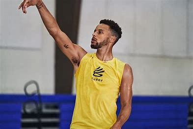

Detailed Overview
Here's an evaluation of Stephen Curry in English: **Stephen Curry: A Revolutionary Force in Basketball** Stephen Curry is universally recognized as one of the most transformative players in NBA history. A two-time MVP (including the league's first unanimous selection in 2016), four-time NBA champion, and 10-time All-Star, Curry has redefined modern basketball with his unparalleled shooting prowess, creativity, and gravitational impact on the court.
**Game-Changing Skills:** Curry’s ability to shoot from virtually anywhere—combined with his lightning-quick release, handles, and off-ball movement—has forced defenses to evolve. He holds the NBA record for most three-pointers made (3,747 and counting) and turned the three-pointer from a supplemental weapon into a primary offensive strategy league-wide. **Impact Beyond Stats:** Beyond numbers, Curry’s "gravity" creates opportunities for teammates by drawing double-teams even before crossing half-court. His unselfish playstyle and leadership were instrumental in building the Golden State Warriors dynasty, emphasizing teamwork, pace, and spacing. **Overcoming Adversity:** Often underestimated early in his career due to his slight frame, Curry silenced critics by improving his strength, durability, and defensive IQ. His work ethic and mental resilience—evident in comebacks from ankle injuries and playoff setbacks—embody elite athletic perseverance. **Cultural Influence:** Curry’s humility, sportsmanship, and faith resonate off the court. He inspired a generation of players to prioritize skill development over physicality, democratizing basketball for smaller athletes. His philanthropic efforts, including education initiatives and COVID-19 relief donations, further cement his legacy as a role model. **Legacy:** By blending revolutionary skill with integrity, Curry has transcended sports. He didn’t just master the game—he reinvented it, proving that innovation and relentless effort can eclipse conventional limitations. Future NBA eras will undoubtedly bear his imprint. In summary, Stephen Curry is a once-in-a-lifetime talent who transformed basketball’s strategic landscape while embodying excellence, creativity, and character.Off the court, Curry is known for his leadership and community involvement. His commitment to philanthropy is evident through his active participation in charitable initiatives, educational programs, and youth outreach. His work not only uplifts his community but also sets an example of how sports figures can use their influence for positive social change. The details of his career, including the challenges he overcame and the milestones he achieved, offer a fascinating insight into the world of professional basketball and the relentless pursuit of excellence.
Key Milestones in His Career
- Multiple NBA Championships
- Revolutionizing the 3-point shot
- Record-breaking playoff performances
- Active community and philanthropic work